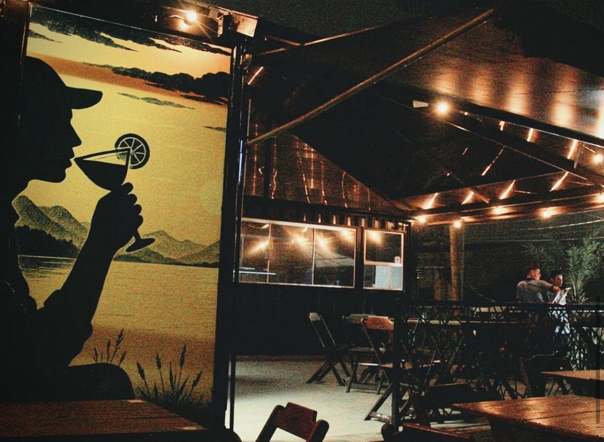

BRISA
Lounge Bar
Onde a brisa é leve
e a experiência é única
Cardápio
Drinks, porções, tábuas e caldos
Ver no mapa
Como chegar
Rua Rio Acima, 455 — Riacho Grande
São Bernardo do Campo
Avaliar no Google
Deixe sua nota e um comentário
Instagram
@brisaloungebar